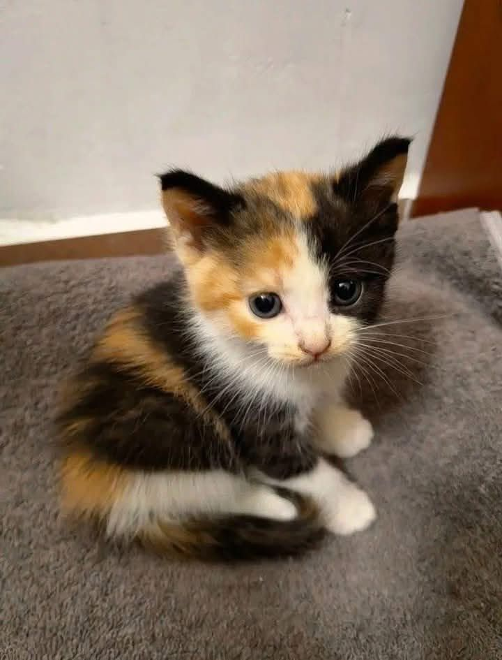
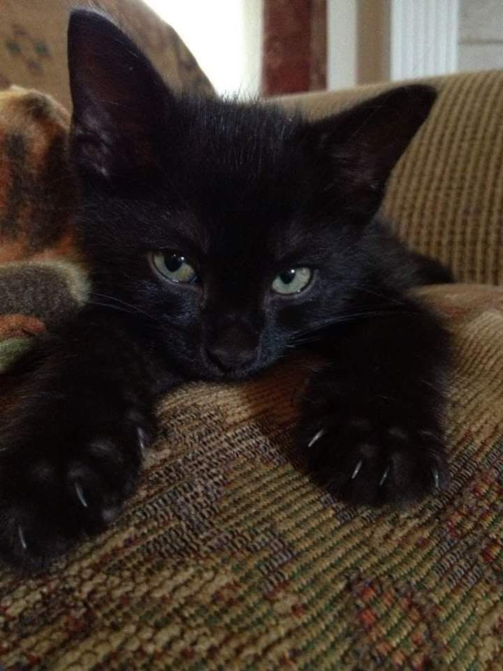

GATOS
Nós somos a Adopt, uma ONG brasileira fundada em 2004 e dedicada a conectar animais a lares responsáveis e cheios de carinho. Trabalhamos para dar uma nova oportunidade a cães, gatos, pássaros e outros pets que precisam de cuidado, proteção e uma família para chamar de sua. Se você deseja adotar um novo companheiro ou precisa encontrar um novo lar para o seu pet, estamos aqui para ajudar. Nossa missão é promover adoções responsáveis e criar conexões que transformem vidas, oferecendo aos animais a chance de viverem com segurança e amor.

GATOS

CACHORROS

PÁSSAROS

OUTROS




Banco Itaú - Agência: 3213 - Conta corrente: 2900990390
Nossa chave Pix no CNPJ: 55644466646464
ou escanei o QR code abaixo:

Infelizmente não podemos divulgar nosso endereço publicamente.
Uma medida tomada para evitar abandonos na porta o que dificultaria nosso trabalho.
Porém visitas são bem-vindas mediante a um agendamento por email ou telefone:
Email: ongadopt@gmail.com
Telefone: (11) 93543-8864